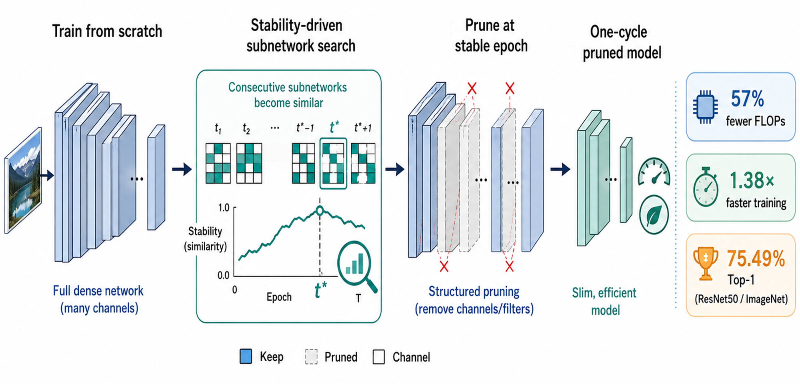

One-cycle Structured Pruning with Stability Driven Subnetwork Search
Introduces a one-cycle structured pruning strategy that searches for stable subnetworks while the model is being compressed. The goal is to make deep vision models lighter and more deployable without relying on a long, multi-stage pruning pipeline.
Expand
- Venue
- Proceedings of the IEEE/CVF Winter Conference on Applications of Computer Vision (WACV), 2026, pp. 5467-5476.
- Authors
- Affiliations
-
- IT Application Research Center, Korea Electronics Technology Institute
- Department of Intelligent Semiconductors, Soongsil University
- Department of Computer Science & Engineering, Seoul National University
- Abstract
- Existing structured pruning methods typically rely on multi-stage training procedures that incur high computational costs. Pruning at initialization aims to reduce this burden but often suffers from degraded performance. To address these limitations, we propose an efficient one-cycle structured pruning framework that integrates pre-training, pruning, and fine-tuning into a single training cycle without sacrificing accuracy. The key idea is to identify an optimal sub-network during the early stages of training, guided by norm-based group saliency criteria and structured sparsity regularization. We introduce a novel pruning indicator that detects a stable pruning epoch by measuring the similarity between pruning sub-networks across consecutive training epochs. In addition, group sparsity regularization accelerates convergence, further reducing overall training time. Extensive experiments on CIFAR-10, CIFAR-100, and ImageNet using VGG, ResNet, and MobileNet architectures demonstrate that the proposed method achieves state-of-the-art accuracy while being among the most efficient structured pruning frameworks in terms of training cost. Code is available at ghimiredhikura/OCSPruner.